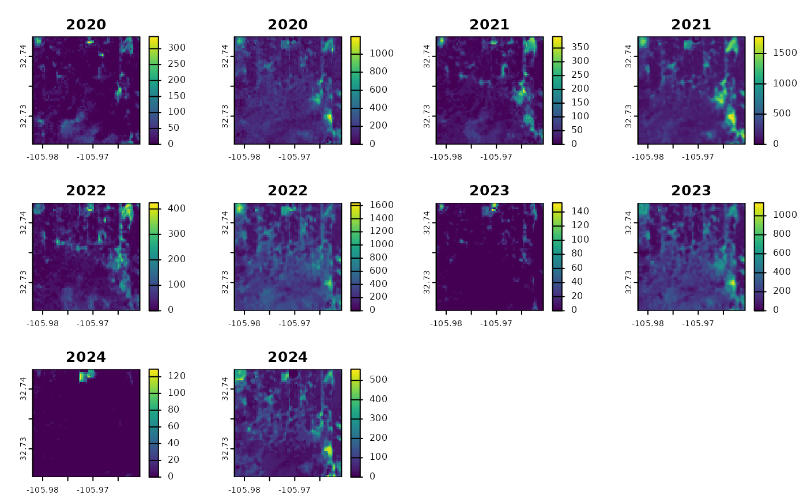

Two sets of 'Rangeland Analysis Platform' (RAP) products are available (see
source argument). "rap-30m" is Landsat-derived and has approximately 30
meter resolution in WGS84 decimal degrees ("EPSG:4326"). This is the data
source that has been used in the 'rapr' package since 2022. A newer source
(2025), "rap-10m", is Sentinel 2-derived and has 10 meter resolution in the
local WGS84 UTM zone ("EPSG:326XX", where XX is the two digit UTM zone
number). See Details for the products and bands available for the different
resolutions and sources.
Usage
get_rap(
x,
years,
product,
filename = NULL,
...,
source = "rap-30m",
version = "v3",
vrt = FALSE,
sds = FALSE,
legacy = FALSE,
verbose = TRUE
)Arguments
- x
Target extent. Derived from an sf, terra, raster or sp object or numeric vector containing
xmin,ymax,xmax,yminin WGS84 decimal degrees (longitude/latitude,"EPSG:4326").- years
integer. Year(s) to query. Products are available from 1986 (
source="rap-30m") or 2018 (source="rap-10m") up to the year prior to the current year, based on availability of the Landsat and Sentinel 2 source data.- product
Target data:
"vegetation-biomass","vegetation-cover", and/or"vegetation-npp"forsource="rap-30m";"pft"(plant functional type cover),"gap"(canopy gap),"arte"(Artemisia spp. cover),"iag"(invasive annual grass cover), or"pj"(pinyon juniper cover) forsource="rap-10m".- filename
Output filename (optional; default stores in temporary file or in memory, see
terra::tmpFiles())- ...
Additional arguments passed to internal query function and
terra::writeRaster()(orterra::vrt()whenvrt=TRUE)- source
Grid sources. Options include
"rap-30m"(default; Landsat) and"rap-10m"(Sentinel 2).- version
Target version:
"v3"and/or"v2"(for"rap-30m"). Currently ignored forsource="rap-10m".- vrt
logical. Short circuit to return Virtual Raster Dataset (VRT) for selected grids via
terra::vrt(). Default:FALSE. Note:gdalbuildvrtdoes not support heterogeneous projection systems, so this option is not compatible withsource="rap-10m"over multiple UTM zone areas of interest.- sds
logical. Return data as a SpatRasterDataset? Helpful for results containing multiple years and products. Default
FALSEreturns a SpatRaster object.- legacy
logical. Use legacy (gdal_translate) method? Default:
FALSE(applies only tosource="rap-30m").- verbose
logical. Print messages indicating progress? Default:
TRUE. Forlegacy=TRUEprogress is shown usingutils::txtProgressBar().
Value
a SpatRaster containing the requested product layers by year. If
sds=TRUE a SpatRasterDataset where each SpatRaster contains only one
product (possibly with multiple years)
Details
Sources, Products, and Band Information
For "rap-30m" you can query several Landsat derived annual biomass,
cover, and Net Primary Productivity products from 1986 to present:
product = "vegetation-biomass"returns two layers per year:2 Bands:
"annual forb and grass","perennial forb and grass"(lbs / acre)
product = "vegetation-cover"returns six layers per year:6 Bands:
"annual forb and grass","bare ground","litter","perennial forb and grass","shrub","tree"(% cover)
product = "vegetation-npp"returns four layers per year:4 Bands:
"annual forb and grass","perennial forb and grass","shrub","tree"(NPP; kg*C/m^2)
For "rap-10m" you can query several Sentinel 2 derived cover products at 10 meter
resolution from 2018 to present:
product = "pft"returns fractional cover estimates of plant functional types:6 Bands:
"annual forb and grass","bare ground","litter","perennial forb and grass","shrub","tree"(% cover)
product = "gap"returns canopy gap estimates for four canopy gap size classes:4 Bands:
"Gaps 25-50 cm","Gaps 51-100 cm","Gaps 100-200 cm","Gaps >200 cm"(% cover)
product = "arte"returns cover estimates of Artemisia species, including A. arbuscula, A. cana, A. nova, A. tridentata, and A. tripartita.1 Band:
"Artemisia spp."(% cover)
product = "iag"returns fractional cover estimates of Bromus tectorum, B. arvensis, B. rubens, B. hordeaceus, Eremopyrum triticeum, Schismus spp., Taeniatherum caput-medusae, and Ventenata dubia.1 Band:
"invasive annual grass"(% cover)
product = "pj"returns fractional cover estimates of Juniperus monosperma, J. occidentalis, J. osteosperma, J. scopulorum, Pinus edulis, and P. monophylla.1 Band:
"pinyon-juniper"(% cover)
Temporary Files
Large requests may generate intermediate objects that will be stored as
temporary files. See terra::tmpFiles() to view the file paths. These
files will be removed when an R session ends.
Alternate Specification of Area of Interest
In lieu of a spatial object from {terra}, {raster}, {sf} or {sp}
packages you may specify a bounding box using a numeric vector containing
the top-left and bottom-right coordinates (xmin, ymax, xmax, ymin)
in WGS84 longitude/latitude decimal degrees. This corresponds to the
conventional order used in the gdal_translate -projwin option. e.g.
get_rap(x = c(-120, 37, -119.99, 36.99), ...).
Native Resolution and Projection Systems
Native cell resolution of "rap-30m" is approximately 30m x 30m in WGS84
geographic coordinate system (longitude, latitude). Native cell resolution of
"rap-10m" is 10m x 10m in the local (projected) WGS84 Universal Transverse
Mercator (UTM) system.
For "rap-10m" requests spanning multiple UTM zones, either pass a
SpatRaster object as x or specify template argument. In lieu of a
user-specified grid system for multi-zone requests, a default CONUS Albers
Equal Area projection ("EPSG:5070") with 10 m resolution will be used. See
rap_projection() for options and details.
Examples
library(rapr) # access RAP products
library(terra) # spatial data handling
#> terra 1.8.93
p <- buffer(terra::vect(
data.frame(x = -105.97133, y = 32.73437),
geom = c("x", "y"),
crs = "OGC:CRS84"
), width = 1000)
rap <- get_rap(
p,
product = "vegetation-biomass",
years = 2020:2024,
verbose = FALSE
)
plot(rap, type = "continuous")

rap10m <- get_rap(
p,
product = "pft",
source = "rap-10m",
years = c(2020, 2024),
sds = TRUE,
verbose = FALSE
)
plot(
rap10m$pft_2020,
type = "continuous",
range = c(0, 100),
sub = "Year: 2020"
)
 plot(
rap10m$pft_2024,
type = "continuous",
range = c(0, 100),
sub = "Year: 2024"
)
plot(
rap10m$pft_2024,
type = "continuous",
range = c(0, 100),
sub = "Year: 2024"
)